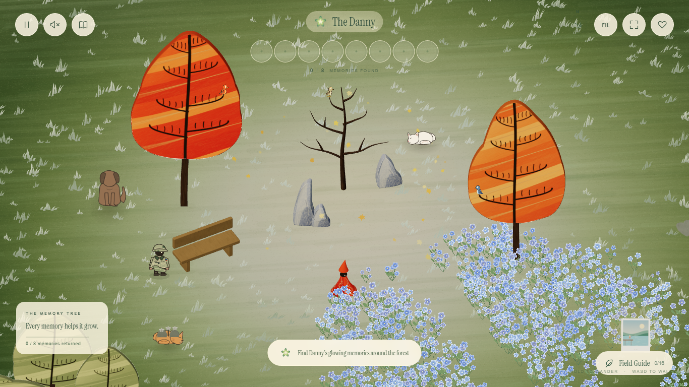
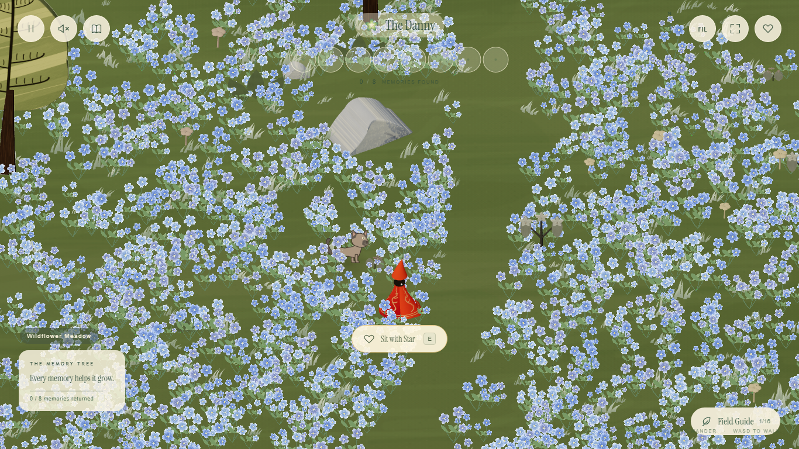

The Danny · new life in the forest
Birdsong & a field of blue
Small painted birds rest on the tree branches. Blue flowers gather beside the clearing and fill the Wildflower Meadow, inspired by Himmel's Blue Moon Weed in Frieren.
Perched birds
Blinking, looking around and flicking their tails while their feet stay on the branches.
Blue Moon flowers
A carpet of flowers with varied heights and a gentle breeze. Follow the path into Wildflower Meadow to find the larger field.
Beside the clearing

Walking through the meadow

Flower inspiration: Frieren, episode 2.